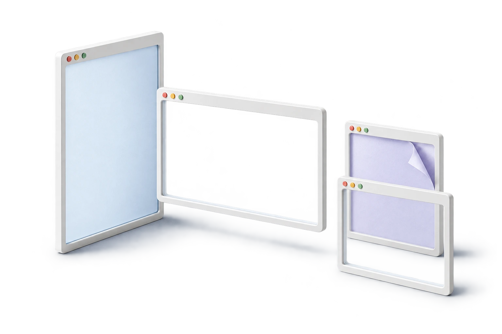

一键，整理这一屏
从菜单栏选个布局，让当前屏幕的可见窗口有序铺开。整理这一屏，不打扰另一屏。

01 / LESS FRICTION
资料、代码、笔记，保持在眼前。
不用一遍遍拖动和调整，工作自然接得上。
从菜单栏选个布局，让当前屏幕的可见窗口有序铺开。整理这一屏，不打扰另一屏。
用快捷键呼出布局库，或把窗口拖向屏幕边缘。鼠标与键盘，都有熟悉的节奏。
恢复上一次排布前的位置和尺寸。支持排除不想整理的 App，工作方式由你决定。
02 / FEELS LIKE MAC
选一个布局，看看窗口怎么分配。
间距、边距、排除的 App，按你的习惯来。
 SNAPTILER
SNAPTILERv0.3.4 · 构建 24 实机截图 · 点击查看原图
03 / YOUR WAY TO WORK
并排读，两边写，或铺满一整块大屏。
点击下方布局，试试哪种更适合你。
布局交互示意，不是应用截图。9 / 12 分区建议搭配大屏；部分 App 的最小窗口尺寸会限制排列效果。
THOUGHTFUL, DOWN TO THE DETAILS
32 个语言与地区版本，跟随系统，也能随时切换。
32 个语言与地区版本包含地区变体。我们持续改进本地化，官网提供中文与英文。
面向目标显示器整理可见窗口。外接大屏时，也保留其他屏幕的工作节奏。
首批发行目标是搭载 Apple silicon（M 系列芯片）、运行 macOS 13 或更新版本的 Mac。目前尚未提供经过验证的 Intel 安装包。最低系统版本的独立设备验收仍在补充中。
窗多多 需要通过 macOS 的辅助功能接口读取窗口位置和大小，并在你的操作下调整窗口。这个权限不是屏幕录制权限，也不需要关闭系统完整性保护（SIP）。你可以随时在系统设置中撤销授权。
当前 App 没有账号、广告 SDK 或分析上报，也不包含将窗口信息上传到服务器的代码。偏好设置保存在本机。主动提交问题时，请先去掉截图或日志中的私人内容。官网托管服务的访问日志另见隐私说明。
批量整理面向当前目标屏幕的可见窗口，不设计跨 Space 搬移功能。第三方 App、自定义标题栏和不同显示器组合可能影响兼容性；发生限制时，App 会提示。建议先用不含未保存内容的窗口试用。
当前优先通过官网直接分发。Mac App Store 的沙盒要求与跨应用窗口控制存在兼容性限制，暂不承诺上架日期。当前版本支持手动检查与可关闭的每日更新提醒，软件运行时才会检查，下载安装由你决定。具体可下载状态以下方下载区为准。
请通过公开反馈区描述 macOS 版本、芯片、使用的 App 和复现步骤。不要附带密码、私人文件或完整窗口内容。 查看支持入口 ↗